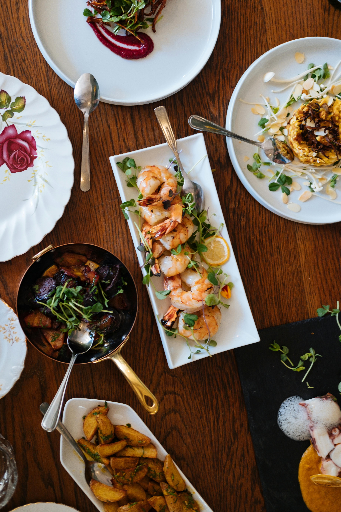

Garlic Butter Shrimp

Description
This garlic butter shrimp recipe is a fast, flavorful dish that’s ready in under 15 minutes. Juicy shrimp are sautéed in a rich garlic-butter sauce with a hint of lemon for brightness.
Perfect as a main dish with rice or pasta, or as a delicious topping for salads and bowls.
Ingredients
- 1 lb (450 g) large shrimp, peeled and deveined
- 2 tablespoons unsalted butter
- 3 cloves garlic, minced
- 1 tablespoon olive oil
- ½ teaspoon paprika
- Salt and black pepper, to taste
- Juice of ½ lemon
Steps
- Prep the Shrimp: Pat the shrimp dry and season with salt, pepper, and paprika.
- Cook Garlic: In a large skillet over medium heat, add olive oil and butter. Once melted, add minced garlic and cook for 30 seconds until fragrant.
- Sauté Shrimp: Add the shrimp in a single layer and cook for 2–3 minutes per side, or until pink and opaque.
- Finish: Squeeze lemon juice over the shrimp and toss to coat.
- Serve: Garnish with parsley and serve immediately with rice, pasta, or crusty bread.
Home